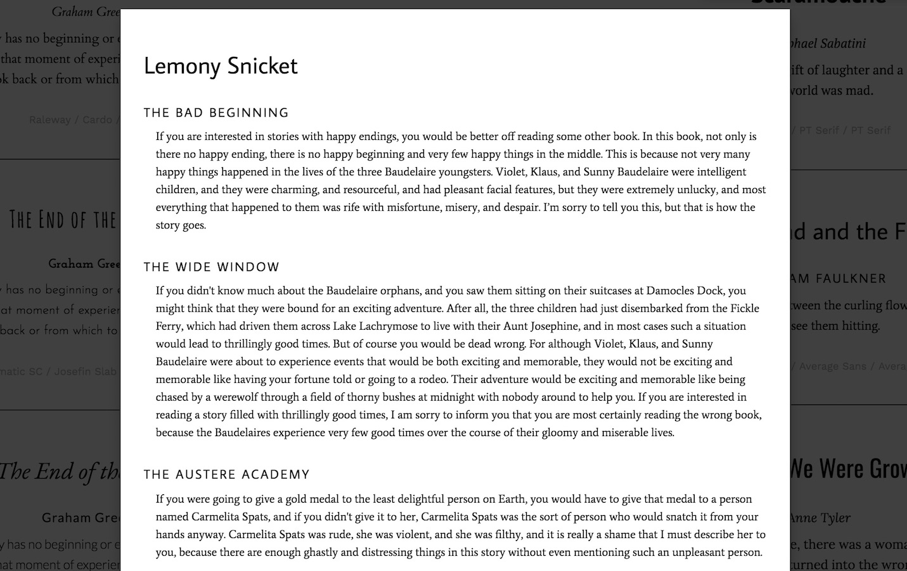

As a frequent Google Fonts lurker, I made this React webapp to showcase and store some of my favorite Google Fonts hierarchies for others to see—hence the project's name. It's still a bit of a work in progress, but it was also one of my first React projects, and builidng this was an incredible learning experience.
You can find the webapp online here.
Hierarchy is pretty simple: it's built to show you some font combinations, and it does exactly that. Navigating to the landing page shows you this:

Each time the page is refreshed, for each font combination, new dummy text is inserted to display it. At the bottom, the grey subtext indicates which set of fonts I used, so users can also replicate it on their own. Clicking into each container brings up a more detailed view:
The user can scroll up and down as they wish, and tap anywhere out of it to go back to the main screen. I purposefully designed it to be as easily navigable as possible with only one mouse click. If a user is using this site, then chances are they're looking for a font combination, which means they'll be shopping around for several to get an idea of what possibilities are out there.
All in all, this project is likely still in its beta stages—there's a lot I wanted to do that didn't get done yet, like adding more combinations and possibly implementing a tagging system to filter them for "feel". I'd also like to show the user my exact CSS for each font combination, as many of them are in smallcaps or kerned or use different weights than the default.
This project was also a great way for me to combine my love for literature with typography, and I admittedly spent more time than I should have combing the internet looking for powerful first sentences of novels.